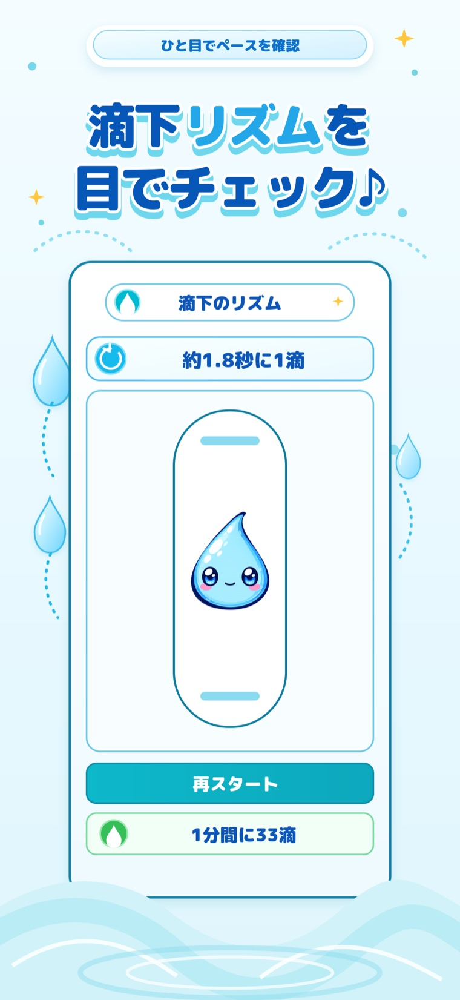
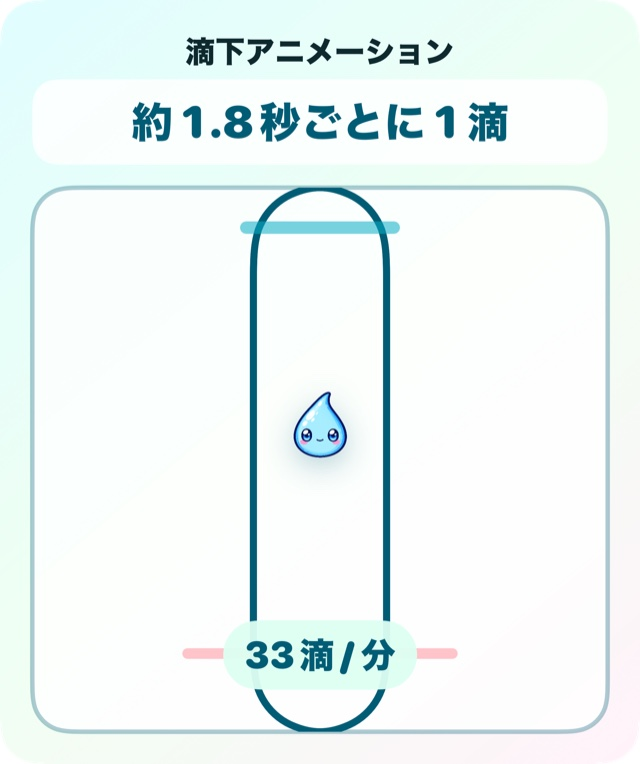
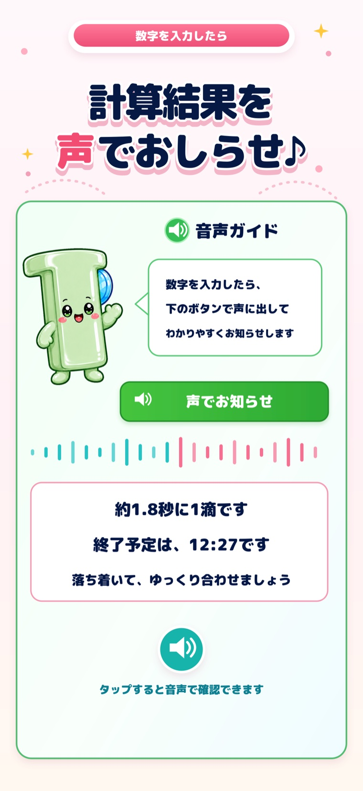
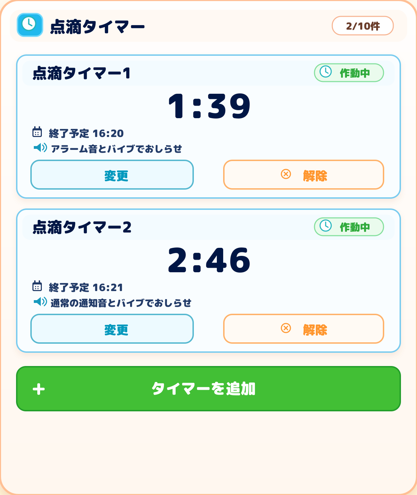

滴下リズム
1滴の間隔を動きで確認
計算した「何秒に1滴」の間隔に合わせて、しずくが動きます。再スタートして繰り返し確認できます。
NEW 点滴タイマーを追加
輸液量・投与時間・滴下係数から、
滴下数・流量・1滴の間隔をまとめて確認。
計算した投与時間から点滴タイマーも設定できます。

主な機能
輸液量と投与時間を入力して滴下係数を選ぶだけ。計算結果と確認方法を、迷いにくい順序でまとめています。
滴下数、mL/時、何秒に1滴かを同時に確認できます。
その場に合わせて、数字入力と選択式を切り替えられます。
計算した間隔をアニメーションで視覚的に確認できます。
計算結果を音声や手元のApple Watchでも確認できます。
確認サポート
数字だけではつかみにくい滴下の間隔も、画面の動きと音声で確認できます。

計算した「何秒に1滴」の間隔に合わせて、しずくが動きます。再スタートして繰り返し確認できます。

滴下数、流量、1滴の間隔、終了予定時刻などを音声で読み上げます。聞き直したいときは、もう一度再生できます。
滴下リズムと音声ガイドは確認を補助する機能です。実際の投与では、施設の手順や輸液セットの規格を必ず確認してください。

点滴タイマー
iPhone計算した投与時間、または任意の時間からタイマーを追加できます。複数の点滴をひとつの画面で見分けやすく管理できます。
短い識別名、残り時間、終了予定を一覧で確認できます。
入力した投与時間を使う方法と、その場で時間を指定する方法を選べます。
音とバイブ、通常の通知音、キャラクターから選べます。音とバイブは対応OSと許可設定が必要です。
ご注意：点滴タイマーはiPhoneで利用できます。通知は端末設定や集中モードなどの影響を受ける場合があります。終了予定は画面でも確認してください。
使い方
入力から結果の確認まで、ひとつの流れで使えます。
輸液量と投与時間を入力します。直接入力と選択入力を切り替えられます。
20滴/mL、60滴/mL、または任意の滴下係数を選びます。
滴下数・流量・1滴の間隔を確認し、必要に応じて滴下リズムや音声ガイドを使います。
本アプリは医療判断、診断、治療指示を行うものではありません。計算結果は目安として使用し、実際の投与では施設の手順、医師の指示、輸液セットの規格を必ず確認してください。